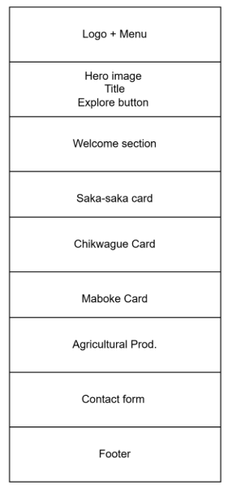
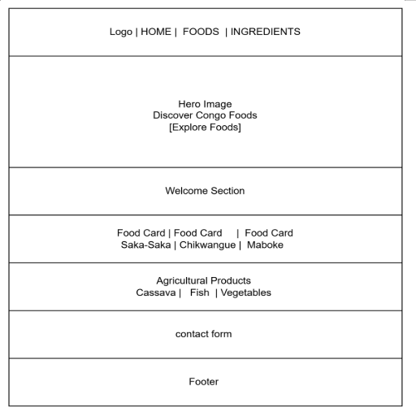

Site Name
Discover Congo: A Taste of Tradition
This name was chosen because it reflects the purpose of the website: introducing visitors to the traditional foods and culinary heritage of the Republic of the Congo.
Optional Domain: discovercongofoods.org
Site Purpose
The website will provide information about traditional Congolese foods including Saka-Saka, Chikwangue, Maboke, and Poulet à la Moambe. Visitors will learn about ingredients, preparation methods, nutritional benefits, and the cultural significance of these foods.
Scenarios
- What are the most popular traditional foods in the Republic of the Congo?
- How is Saka-Saka prepared and what ingredients are needed?
- Which agricultural products are commonly used in Congolese cooking?
- What cultural traditions are associated with Maboke and Chikwangue?
Color Schema
| Color | Hex Code | Usage |
|---|---|---|
| Deep Blue | #094074 | Headings, Navigation, Footer |
| Coral | #E88873 | Buttons, Links, Highlights |
| Soft Yellow | #F7EF81 | Accent Sections |
| Off-White | #F8F8F8 | Page Background |
Typography
Montserrat will be used for headings and section titles.
Roboto will be used for body text and navigation.
Logo
A Taste of Tradition
Mobile Wireframe

Desktop Wireframe
